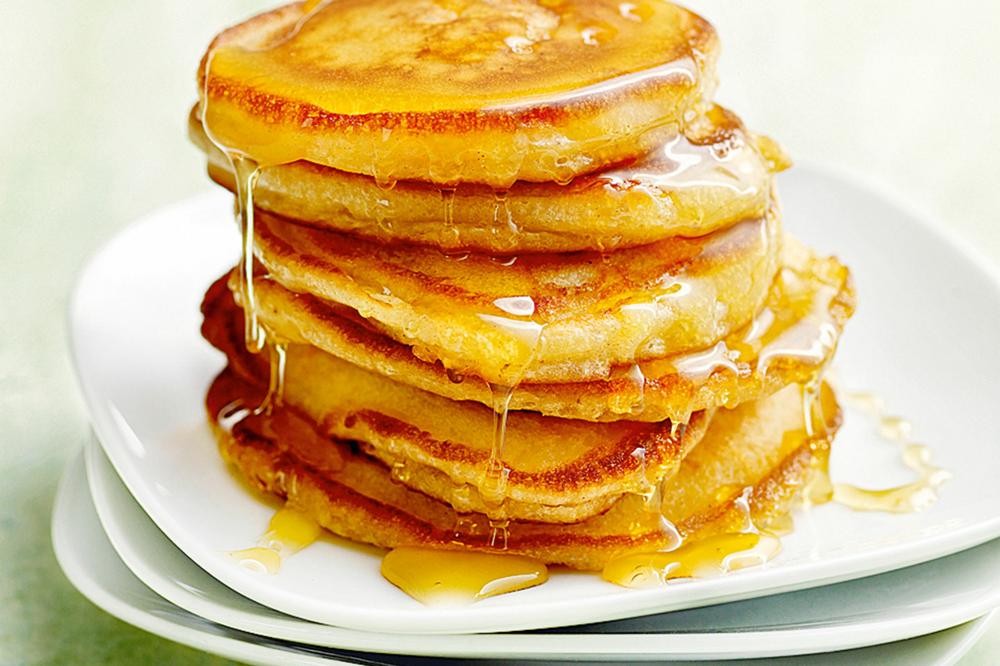

!DOCTYPE html>
Pancakes
Pancakes

Description
Pancakes are the perfekt breakfast, espacially with maple syrup. You're day can't start any better.
Ingridients (for ap. 10 pieces)
try the vegan version
- 250 gr flour
- 50 gr sugar
- 2 Eggs
- 1 Tsp baking powder
- some Milk or Buttermilk
- Pinch of salt
- 20 gr Butter
- Neutral Oil
Steps
- Preparation:
- Melt the butter
- Seperate the egg white, whip it
- Mix flour, sugar, baking powder, salt, melted butter and egg yolks
- Slowly add some milk, the dough should not be too fluid
- Add the whipped egg white carefully with a metal spoon
- Fry your delicous pancakes on medium heat
- When they're ready, add maple syrup and some butter